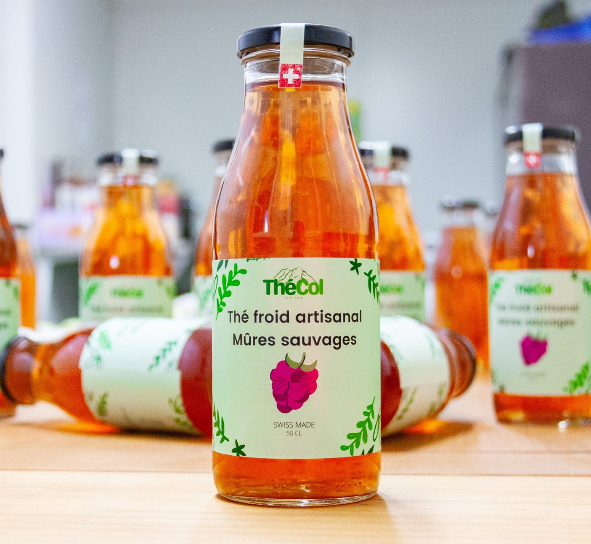

Faire briller notre terroir
Savoir profiter de la diversité si riche de nos régions.
Parce que la diversité de nos régions est bien trop belle pour ne pas en profiter.

Brassé àNous avons créé notre thé froid durant nos études, et souhaitons aujourd'hui offrir une boisson d'une qualité inégalée.
Découvrir notre histoireSavoir profiter de la diversité si riche de nos régions.
Le meilleur des ingrédients, simple, pas trop sucré.
Retrouvez au travers de nos produits, la passion que nous y mettons.
Notre marque de fabrique : des saveurs originales, inspirées des terroirs fribourgeois et suisse.
Nous nous efforçons d'améliorer notre disponibilité en proposant nos produits auprès de petits commerçants dans une région géographique la plus complète possible, afin de vous permettre d'avoir accès à un point de vente facilement. Vous pourrez retrouver l'ensemble de nos distributeurs actuels ici. Vous pensez à un nouveau point de vente pour nous ou gérez un établissement ? Contactez-nous !
Nous appliquons une date de péremption de 6 mois à compter de la production à nos bouteilles. Hermétiquement fermées, il n'est pas nécessaire de les stocker au frigo. Une simple protection à l'abri de la lumière et de la chaleur garantira à vos thés froids un environnement parfait ! Une fois ouvert, laissez votre boisson préférée au frigo et finissez-la sans tarder, avant que quelqu'un d'autre ne le fasse !
Pour des raisons de logistique, nous n'appliquons pas de consigne sur nos bouteilles. Vous pouvez donc les garder ou les rendre. La plupart de nos distributeurs acceptent de récupérer vos bouteilles vides et nous les transmettent lorsque nous les livrons à nouveau, mais vous pouvez aussi leur trouver une nouvelle utilisation : gourde, vase, lampe ou chandelier, partagez-nous vos meilleures idées !
Si vous êtes déjà distributeur, vous pouvez nous envoyer votre commande par mail à l'adresse commande@thecol.ch ou à toute autre adresse mail avec laquelle vous auriez déjà eu contact. Si vous n'êtes pas encore distributeur, êtes intéressé à le devenir et souhaitez en savoir plus, n'hésitez pas à nous contacter, c'est avec plaisir que nous vous renseignerons.
Retrouvez nos thés froids artisanaux chez l'un de nos 34 distributeurs partenaires ou commandez directement en ligne.
 Hibiscus
Hibiscus
 Mûres sauvages
Mûres sauvages
 Fleur de Sureau
Fleur de Sureau
 Herbes des Alpes
Herbes des Alpes
 Poire à Botzi
Poire à Botzi